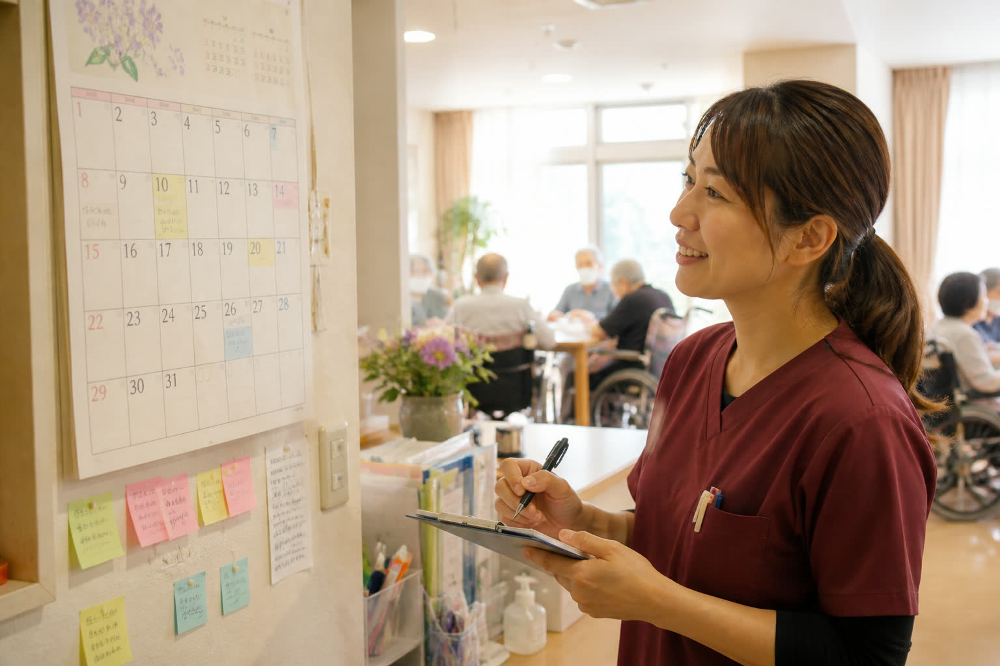

施設全体の予定を一画面にまとめ、現場が同じ情報を見ながら動けます。

※CareSyncは施設ごとの導入アプリです。まずは相談からご案内します。
読取結果（例）
・往診 ○月○日
・利用変更 通い→泊まり
・残薬確認 切れ目の目安
→ 職員が確認してOK
※画面はイメージです。公開ページには個人が特定できる実データは載せていません。
AIの読取結果は、職員による確認を前提とした支援情報です。
データの保存方法や本運用時の取り扱いについては、導入前にご説明します。
まずはお気軽にご相談ください。初回相談は無料・約30分です。
iwaki@himawasa-sync.com ／ 080-5568-6398